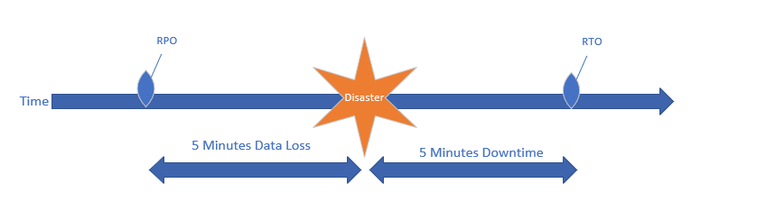

The focus of unit 9 was business continuity and disaster recovery. In unit 9 the introduction to disaster recovery as a service (DRaaS) by Andrade et al (2017) is certainly a very attractive alternative for enterprises which cannot afford expensive custom DR solutions. Before designing any DR solution certain parameter like RTOs and DPOs need to be defined and althought the definitions seem to be clear some more thinking is required to put them into the proper context in a real life situation. I made the following diagram to help me understand a timeline of events in a potential disaster:

As shown above, an RPO of 5 minutes means that from the moment the disaster occurs we should be able to recover all data up to 5 minutes before the disaster. A data loss of the last 5 minutes is acceptable. At the same time , from the moment of a disaster taking place we should be able to recover services within 5 minutes. It helps very much to be able to plot the timeline since it can be confusing to have the same RTO and RPO values and think that RPO counts from the moment the disaster occured and forwards, which is not the case as demonstrated above.
Besides unit 9 material on BC/DR collaborative discussions continued
in the forums but it seemed to me the activity was somewhat lower as
week 12 is approaching with its final submission everyone seems to be
busy working on their projects.